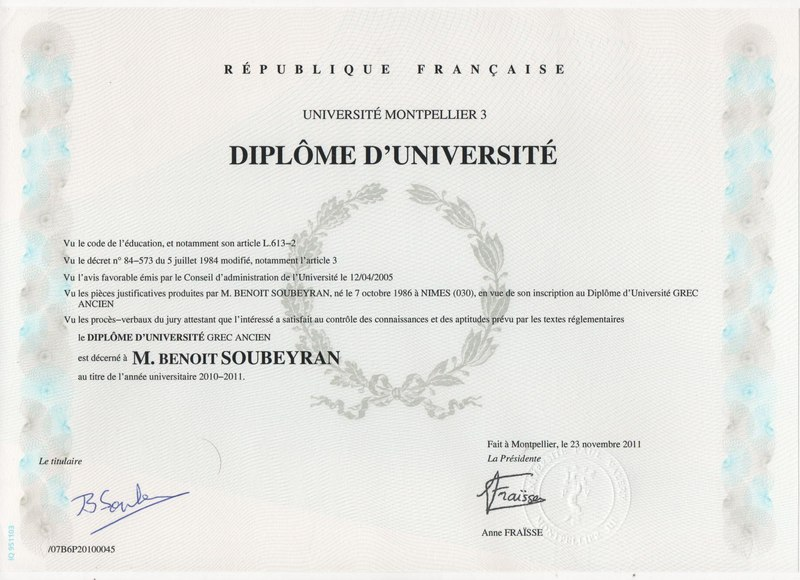

Diplômes baccalauréat :Détenteur d'un Baccalauréat en Sciences Expérimentales obtenu avec succès en 2019, mon parcours académique a été marqué par une immersion approfondie dans les domaines des sciences physiques, biologiques et chimiques. Grâce à une formation rigoureuse, j'ai acquis une solide base de connaissances théoriques et pratiques, me permettant de comprendre et d'appliquer les principes scientifiques fondamentaux |
|
|  |
Diplôme faculté :Titulaire d'un Diplôme en Informatique décerné avec succès en 2023, mon parcours académique reflète une expertise approfondie dans le domaine de l'informatique. Au cours de mes études, j'ai acquis des connaissances avancées en programmation, développement de logiciels, conception de systèmes informatiques et gestion de bases de données |